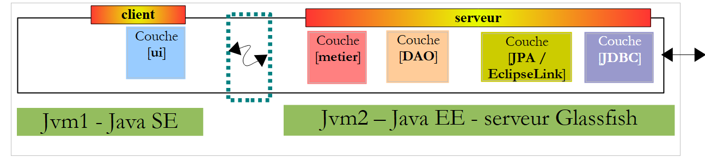
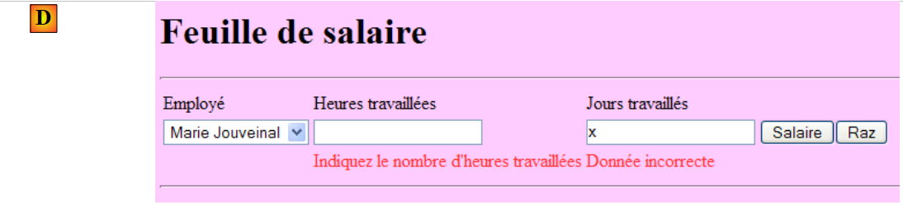
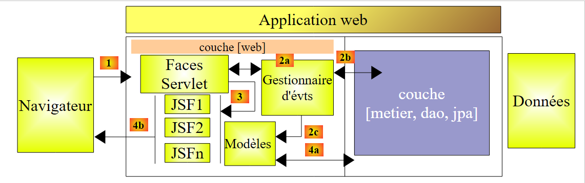
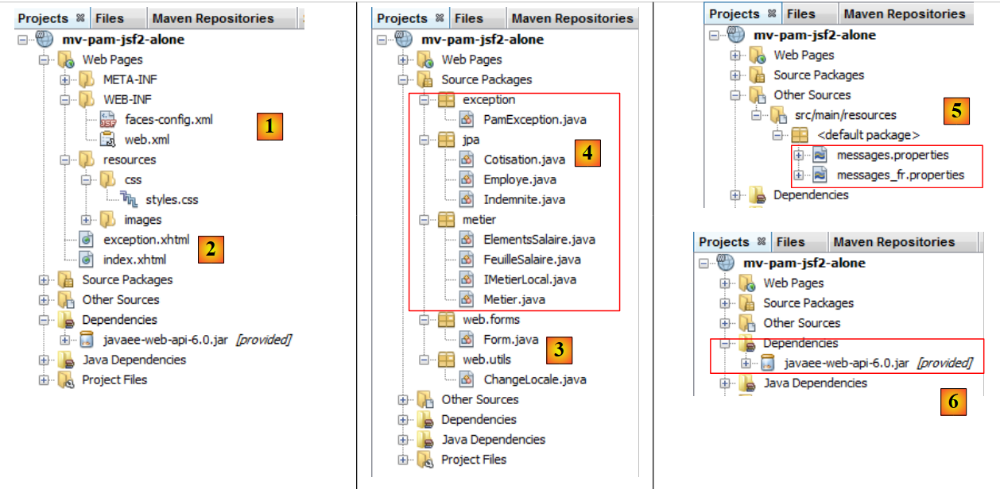
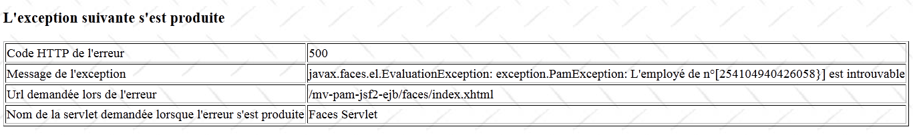

10. Version 5 - Application PAM Web / JSF
10.1. Architecture de l'application
L'architecture de l'application web PAM sera la suivante :
 |
Dans cette version, le serveur Glassfish hébergera la totalité des couches de l'application :
- la couche [web] est hébergée par le conteneur de servlets du serveur (1 ci-dessous)
- les autres couches [metier, DAO, jpa] sont hébergées par le conteneur EJB3 du serveur (2 ci-dessous)
 |
Les éléments [metier, DAO] de l'application s'exécutant dans le conteneur EJB3 ont déjà été écrits dans l'application client / serveur étudiée au paragraphe 7.1, et dont l'architecture était la suivante :
 |
Les couches [metier, DAO] s'exécutaient dans le conteneur EJB3 du serveur Glassfish et la couche [ui] dans une application console ou swing sur une autre machine :
 |
Dans l'architecture de la nouvelle application :
 |
seule la couche [web / jsf] est à écrire. Les autres couches [metier, DAO, jpa] sont acquises.
Dans le document [ref3], il est montré qu'une application web où la couche web est implémentée avec Java Server Faces a une architecture similaire à la suivante :
 |
Cette architecture implémente le Design Pattern MVC (Modèle, Vue, Contrôleur). Le traitement d'une demande d'un client se déroule de la façon suivante :
Si la demande est faite avec un GET, les deux étapes suivantes sont exécutées :
- demande - le client navigateur fait une demande au contrôleur [Faces Servlet]. Celui-ci voit passer toutes les demandes des clients. C'est la porte d'entrée de l'application. C'est le C de MVC.
- réponse - le contrôleur C demande à la page JSF choisie de s'afficher. C'est la vue, le V de MVC. La page JSF utilise un modèle M pour initialiser les parties dynamiques de la réponse qu'elle doit envoyer au client. Ce modèle est une classe Java qui peut faire appel à la couche [métier] [4a] pour fournir à la vue V les données dont elle a besoin.
Si la demande est faite avec un POST, deux étapes supplémentaires s'insèrent entre la demande et la réponse :
- demande - le client navigateur fait une demande au contrôleur [Faces Servlet].
- traitement - le contrôleur C traite cette demande. En effet, une demande POST est accompagnée de données qu'il faut traiter. Pour ce faire, le contrôleur se fait aider par des gestionnaires d'événements spécifiques à l'application écrite [2a]. Ces gestionnaires peuvent avoir besoin de la couche métier [2b]. Le gestionnaire de l'événement peut être amené à mettre à jour certains modèles M [2c]. Une fois la demande du client traitée, celle-ci peut appeler diverses réponses. Un exemple classique est :
- une page d'erreurs si la demande n'a pu être traitée correctement
- une page de confirmation sinon
Le gestionnaire d'événement rend au contrôleur [Faces Servlet] un résultat de type chaîne de caractères appelée clé de navigation.
- navigation - le contrôleur choisit la page JSF (= vue) à envoyer au client. Ce choix se fait à partir de la clé de navigation rendue par le gestionnaire d'événement.
- réponse - la page JSF choisie va envoyer la réponse au client. Elle utilise son modèle M pour initialiser ses parties dynamiques. Ce modèle peut lui aussi faire appel à la couche [métier] [4a] pour fournir à la page JSF les données dont elle a besoin.
Dans un projet JSF :
- le contrôleur C est la servlet [javax.faces.webapp.FacesServlet]. On trouve celle-ci dans la bibliothèque [jsf-api.jar].
- les vues V sont implémentées par des pages JSF.
- les modèles M et les gestionnaires d'événements sont implémentés par des classes Java souvent appelées "backing beans".
- dans les version JSF 1.x la définition des beans ainsi que les règles de navigation d'une page à l'autre sont définies dans le fichier [faces-config.xml]. On y trouve la liste des vues et les règles de transition de l'une à l'autre. A partir de la version JSF 2, les définitions des beans peuvent se faire à l'aide d'annotations et les transitions entre pages peuvent se faire en " dur " dans le code des beans.
10.2. Fonctionnement de l'application
Lorsque l'application est demandée la première fois, on obtient la page suivante :
 |
On remplit alors le formulaire puis on demande le salaire :
 |
On obtient le résultat suivant :
 |
Cette version calcule un salaire fictif. Il ne faut pas prêter attention au contenu de la page mais à sa mise en forme. Lorsqu'on utilise le bouton [Raz], on revient à la page [A].
Les saisies erronées sont signalées, comme le montre l'exemple suivant :
 |
10.3. Le projet Netbeans
Nous allons construire une première version de l'application où la couche [métier] sera simulée. Nous aurons l'architecture suivante :
 |
Lorsque les gestionnaires d'événements ou les modèles demanderont des données à la couche [métier] [2b, 4a], celle-ci leur donnera des données fictives. Le but est d'obtenir une couche web répondant correctement aux sollicitations de l'utilisateur. Lorsque ceci sera atteint, il ne nous restera qu'à installer la couche serveur développée au paragraphe 7.1 :
 |
Ce sera la version 2 de la version web de notre application PAM.
Le projet Netbeans de la version 1 est le projet Maven suivant :
 |
- en [1], les fichiers de configuration
- en [2], les pages XHTML et la feuille de style
- en [3], les classes de la couche [web]
- en [4], les objets échangés entre la couche [web] et la couche [métier] et la couche [métier] elle-même
- en [5], le fichier des messages pour l'internationalisation de l'application
- en [6], les dépendances de l'application
Nous passons en revue certains de ces éléments.
10.3.1. Les fichiers de configuration
Le fichier [web.xml] est celui généré par défaut par Netbeans avec de plus la configuration d'une page d'exception :
- ligne 30 : [index.html] est la page d'accueil de l'application
- lignes 32-39 : configuration de la page d'exception
La page [exception.html] est tirée de [ref3]. Son code est le suivant :
Toute exception non explicitement gérée par le code de l'application web provoquera l'affichage d'une page analogue à celle ci-dessous :
 |
Le fichier [faces-config.xml] sera le suivant :
On notera les points suivants :
- lignes 9-14 : le fichier [messages.properties] sera utilisé pour l'internationalisation des pages. Il sera accessible dans les pages XHTML via la clé msg.
- ligne 15 : définit le fichier [messages.properties] comme devant être exploré en priorité pour les messages d'erreur affichés par les balises <h:messages> et <h:message>. Cela permet de redéfinir certains messages d'erreur par défaut de JSF. Cette possibilité n'est pas utilisée ici.
10.3.2. La feuille de style
Le fichier [styles.css] est le suivant :
.libelle{
background-color: #ccffff;
font-family: 'Times New Roman',Times,serif;
font-size: 14px;
font-weight: bold
}
body{
background-color: #ffccff
}
.error{
color: #ff3333
}
.info{
background-color: #99cc00
}
.titreInfos{
background-color: #ffcc00
}
Voici des exemples de code JSF utilisant ces styles :
|  |
|  |
|  |
10.3.3. Le fichier des messages
Le fichier des messages [messages_fr.properties] est le suivant :
form.titre=Feuille de salaire
form.comboEmployes.libell\u00e9=Employ\u00e9
form.heuresTravaill\u00e9es.libell\u00e9=Heures travaill\u00e9es
form.joursTravaill\u00e9s.libell\u00e9=Jours travaill\u00e9s
form.heuresTravaill\u00e9es.required=Indiquez le nombre d'heures travaill\u00e9es
form.heuresTravaill\u00e9es.validation=Donn\u00e9e incorrecte
form.joursTravaill\u00e9s.required=Indiquez le nombre de jours travaill\u00e9s
form.joursTravaill\u00e9s.validation=Donn\u00e9e incorrecte
form.btnSalaire.libell\u00e9=Salaire
form.btnRaz.libell\u00e9=Raz
exception.header=L'exception suivante s'est produite
exception.httpCode=Code HTTP de l'erreur
exception.message=Message de l'exception
exception.requestUri=Url demand\u00e9e lors de l'erreur
exception.servletName=Nom de la servlet demand\u00e9e lorsque l'erreur s'est produite
form.infos.employ\u00e9=Informations Employ\u00e9
form.employe.nom=Nom
form.employe.pr\u00e9nom=Pr\u00e9nom
form.employe.adresse=Adresse
form.employe.ville=Ville
form.employe.codePostal=Code postal
form.employe.indice=Indice
form.infos.cotisations=Informations Cotisations sociales
form.cotisations.csgrds=CSGRDS
form.cotisations.csgd=CSGD
form.cotisations.retraite=Retraite
form.cotisations.secu=S\u00e9curit\u00e9 sociale
form.infos.indemnites=Informations Indemnit\u00e9s
form.indemnites.salaireHoraire=Salaire horaire
form.indemnites.entretienJour=Entretien / Jour
form.indemnites.repasJour=Repas / Jour
form.indemnites.cong\u00e9sPay\u00e9s=Cong\u00e9s pay\u00e9s
form.infos.salaire=Informations Salaire
form.salaire.base=Salaire de base
form.salaire.cotisationsSociales=Cotisations sociales
form.salaire.entretien=Indemnit\u00e9s d'entretien
form.salaire.repas=Indemnit\u00e9s de repas
form.salaire.net=Salaire net
Ces messages sont tous utilisés dans la page [index.xhtml] à l'exception de ceux des lignes 11-15 utilisés dans la page [exception.xhtml].
10.3.4. La portée des beans
Le bean [web.forms.Form] aura une portée request :
import java.io.Serializable;
import javax.faces.bean.ManagedBean;
import javax.faces.bean.RequestScoped;
@ManagedBean
@RequestScoped
public class Form implements Serializable {
Le bean [web.utils.ChangeLocale] aura une portée application :
package web.utils;
import java.io.Serializable;
import javax.faces.bean.ManagedBean;
import javax.faces.bean.SessionScoped;
@ManagedBean
@SessionScoped
public class ChangeLocale implements Serializable{
// la locale des pages
private String locale="fr";
public ChangeLocale() {
}
public String setFrenchLocale(){
locale="fr";
return null;
}
public String setEnglishLocale(){
locale="en";
return null;
}
public String getLocale() {
return locale;
}
public void setLocale(String locale) {
this.locale = locale;
}
}
10.3.5. La couche [métier]
La couche [métier] implémente l'interface IMetierLocal suivante :
package metier;
import java.util.List;
import javax.ejb.Local;
import jpa.Employe;
@Local
public interface IMetierLocal {
// obtenir la feuille de salaire
FeuilleSalaire calculerFeuilleSalaire(String SS, double nbHeuresTravaillées, int nbJoursTravaillés );
// liste des employés
List<Employe> findAllEmployes();
}
Cette interface est celle utilisée dans la partie serveur de l'application client / serveur décrite au paragraphe 7.1.
La classe Metier que nous allons utiliser pour tester la couche [web] implémente cette interface de la façon suivante :
package metier;
...
public class Metier implements IMetierLocal {
// dictionnaire des employes indexé par le n° SS
private Map<String,Employe> hashEmployes=new HashMap<String,Employe>();
// liste des employés
private List<Employe> listEmployes;
// obtenir la feuille de salaire
public FeuilleSalaire calculerFeuilleSalaire(String SS,
double nbHeuresTravaillées, int nbJoursTravaillés) {
// on récupère l'employé de n° SS
Employe e=hashEmployes.get(SS);
// on rend une feuille de salaire fiictive
return new FeuilleSalaire(e,new Cotisation(3.49,6.15,9.39,7.88),new ElementsSalaire(100,100,100,100,100));
}
// liste des employés
public List<Employe> findAllEmployes() {
if(listEmployes==null){
// on crée une liste de deux employés
listEmployes=new ArrayList<Employe>();
listEmployes.add(new Employe("254104940426058","Jouveinal","Marie","5 rue des oiseaux","St Corentin","49203",new Indemnite(2,2.1,2.1,3.1,15)));
listEmployes.add(new Employe("260124402111742","Laverti","Justine","La brûlerie","St Marcel","49014",new Indemnite(1,1.93,2,3,12)));
// dictionnaire des employes indexé par le n° SS
for(Employe e:listEmployes){
hashEmployes.put(e.getSS(),e);
}
}
// on rend la liste des employés
return listEmployes;
}
}
Nous laissons au lecteur le soin de décrypter ce code. On notera la méthode utilisée : afin de ne pas avoir à mettre en place la partie EJB de l'application, nous simulons la couche [métier]. Lorsque la couche [web] sera déclarée correcte, nous pourrons alors la remplacer par la véritable couche [métier].
10.4. Le formulaire [index.xhtml] et son modèle [Form.java]
Nous construisons maintenant la page XHTML du formulaire ainsi que son modèle.
Lectures conseillées dans [ref3] :
- exemple n° 3 (mv-jsf2-03) pour la listes des balises utilisables dans un formulaire
- exemple n° 4 (mv-jsf2-04) pour les listes déroulantes remplies par le modèle
- exemple n° 6 (mv-jsf2-06) pour la validation des saisies
- exemple n° 7 (mv-jsf2-07) pour la gestion du bouton [Raz]
10.4.1. étape 1
Question : Construire le formulaire [index.xhtml] et son modèle [Form.java] nécessaires pour obtenir la page suivante :
 |
Les composants de saisie sont les suivants :
id | type JSF | modèle | rôle | |
comboEmployes | <h:selectOneMenu> | String comboEmployesValue List<Employe> getEmployes() | contient la liste des employés sous la forme "prénom nom". | |
heuresTravaillees | <h:inputText> | String heuresTravaillées | nombre d'heures travaillées - nombre réel | |
joursTravailles | <h:inputText> | String joursTravaillés | nombre de jours travaillés - nombre entier | |
btnSalaire | <h:commandButton> | lance le calcul du salaire | ||
btnRaz | <h:commandButton> | remet le formulaire dans son état premier |
- la méthode getEmployes rendra une liste d'employés qu'elle obtiendra auprès de la couche [métier]. Les objets affichés par le combo auront pour attribut itemValue, le n° SS de l'employé et pour attribut itemLabel, une chaîne constituée du prénom et du nom de l'employé.
- les boutons [Salaire] et [Raz] ne seront pour l'instant pas connectés à des gestionnaires d'événement.
- la validité des saisies sera vérifiée.

Testez cette version. Vérifiez notamment que les erreurs de saisie sont bien signalées.
Note : il est important que les attributs id des composants de la page ne comportent pas de caractères accentués. Avec Glassfish 3.1.2, ça plante l'application.
10.4.2. étape 2
Question : compléter le formulaire [index.xhtml] et son modèle [Form.java] pour obtenir la page suivante une fois que le bouton [Salaire] a été cliqué :
 |
Le bouton [Salaire] sera connecté au gestionnaire d'événement calculerSalaire du modèle. Cette méthode utilisera la méthode calculerFeuilleSalaire de la couche [métier]. Cette feuille de salaire sera faite pour l'employé sélectionné en [1].
Dans le modèle, la feuille de salaire sera représentée par le champ privé suivant :
private FeuilleSalaire feuilleSalaire;
disposant des méthodes get et set.
Pour obtenir les informations contenues dans cet objet, on pourra écrire dans la page JSF, des expressions comme la suivante :
<h:outputText value="#{form.feuilleSalaire.employe.nom}"/>
L'expression de l'attribut value sera évaluée comme suit :
[form].getFeuilleSalaire().getEmploye().getNom() où [form] représente une instance de la classe [Form.java]. Le lecteur pourra vérifier que les méthodes get utilisées ici existent bien respectivement dans les classes [Form], [FeuilleSalaire] et [Employe]. Si ce n'était pas le cas, une exception serait lancée lors de l'évaluation de l'expression.
Testez cette nouvelle version.
10.4.3. étape 3
Question : compléter le formulaire [index.xhtml] et son modèle [Form.java] pour obtenir les informations supplémentaires suivantes :
 |
On suivra la même démarche que précédemment. Il y a une difficulté pour le signe monétaire euro que l'on a en [1] par exemple. Dans le cadre d'une application internationalisée, il serait préférable d'avoir le format d'affichage et le signe monétaire de la locale utilisée (en, de, fr, ...). Cela peut s'obtenir de la façon suivante :
<h:outputFormat value="{0,number,currency}">
<f:param value="#{form.feuilleSalaire.employe.indemnite.entretienJour}"/>
</h:outputFormat>
On aurait pu écrire :
<h:outputText value="#{form.feuilleSalaire.employe.indemnite.entretienJour} є">
mais avec la locale en_GB (Anglais GB) on continuerait à avoir un affichage en euros alors qu'il faudrait utiliser la livre £. La balise <h:outputFormat> permet d'afficher des informations en fonction de la locale de la page JSF affichée :
- ligne 1 : affiche le paramètre {0} qui est un nombre (number) représentant une somme d'argent (currency)
- ligne 2 : la balise <f:param> donne une valeur au paramètre {0}. Une deuxième balise <f:param> donnerait une valeur au paramètre noté {1} et ainsi de suite.
10.4.4. étape 4
Lectures conseillées : exemple n° 7 (mv-jsf2-07) dans [ref3].
Question : compléter le formulaire [index.xhtml] et son modèle [Form.java] pour gérer le bouton [Raz].
Le bouton [Raz] ramène le formulaire dans l'état qu'il avait lorsqu'on l'a demandé la première fois par un GET. Il y a plusieurs difficultés ici. Certaines ont été expliquées dans [ref3].
Le formulaire rendu par le bouton [Raz] n'est pas tout le formulaire mais seulement la partie saisie de celui-ci :

Ce résultat peut être obtenu avec une balise <f:subview> utilisée de la façon suivante :
<f:subview id="viewInfos" rendered="#{form.viewInfosIsRendered}">
... la partie du formulaire qu'on veut pouvoir ne pas afficher
</f:subview>
La balise <f:subview> encadre toute la partie du formulaire qui est susceptible d'être affichée ou cachée. Tout composant peut être affiché ou caché grâce à l'attribut rendered. Si rendered="true", le composant est affiché, si rendered="false", il ne l'est pas. Si l'attribut rendered prend sa valeur dans le modèle, alors l'affichage du composant peut être contrôlé par programme.
Ci-dessus, on contrôlera l'affichage de la vue viewInfos avec le champ suivant :
private boolean viewInfosIsRendered;
accompagné de ses méthodes get et set. Les méthodes gérant les clics sur les bouton [Salaire] [Raz] mettront à jour ce booléen selon que la vue viewInfos doit être affichée ou non.